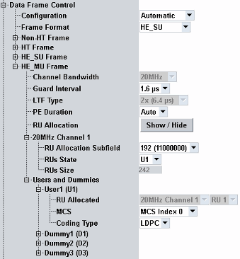
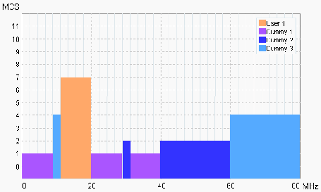

These parameters configure the modulation/ coding rate of the transmitted data frames.

Selects automatic settings or user-defined frame rate control.
- Operating bandwidth
- Standard
- DUT capabilities
- Channel throughput
Note that in the current version, HE rates are not supported with the automatic configuration. To generate an HE frame format, use the user-defined frame rate control.
Remote command:Select the modulation/ coding rate of the transmitted data frames. The available values depend on the selected standard.
Configure the parameters top-down.
Remote command:Selects the modulation/coding rate of the transmitted data frames. The available values depend on the selected standard. The settings are configurable per frame format.
If you want to set a user-defined value, configure the parameters top-down.
- "Rate": With "User Defined" configuration, the selected rate is used for all data frame transmissions - except for packet error rate (PER) tests.
With automatic configuration, the frame rates are set according to standard and also depend on channel bandwidth. - For "Channel Bandwith", refer to "Operating Channel Width".
- "Guard Interval":
– Short or long guard interval for legacy (up to IEEE 802.11ac) – 0.8 μs, 1.6 μs, and 3.2 μs guard interval durations for IEEE 802.11ax - "LTF Type": 1x LTF, 2x LTF or 4x LTF
- "PE Duration": value of packet extension (PE) field to provide additional receive processing time at the end of the HE PPDU. Automatic setting is based on the reported DUTs capabilities.
- "RU Allocation": shows or hides the RU allocations diagram. For a description, see "RU Allocations Diagram".
Option R&S CMW-KS657 is required for IEEE 802.11ax.
Remote command:The diagram provides a graphical overview of all active RU allocations in HE MU frame configured via the nodes "20 MHz Channel Settings" and "Users and Dummies".

The diagram displays 1 bar per RU allocation. The Y-axis indicates the MCS assigned to the particular traffic data configuration.
Traffic data consists of one user data allocation and optionally one or several pseudo-random data allocations (dummies).
Configures allocation arrangement and sizes for the corresponding channel.
- "RU Allocation Subfield": sets 8-bit indices for resource unit (RU) allocation to specify the number of RUs, their position and size. Refer to IEEE P802.11ax, table 28-23, RU allocation signaling.
- "RUs State": disables traffic data for an RU allocation or enables and selects the traffic data configuration to be transmitted in a particular RU. For an RU allocation, you can select one of the following traffic data configurations:
– "User 1": real user data transmission. The traffic data configuration of the type "User" must be allocated to only one RU. – "Dummy": transmission of pseudo-random data. The same traffic data configuration of the type dummy (e.g. "Dummy2") can be applied up to all RU allocations, except for the one occupied by "User 1". – "Off": no traffic data are transmitted in a particular RU - "RUs Size": indicates the number of RU tones (pilot and data subcarriers). RUs sizes are selected via "RU Allocation Subfield"
Option R&S CMW-KS657 is required.
Remote command:Configures traffic data. One "User" must be mapped to one RU within a channel to specify the traffic to the DUT. The remaining RUs can be disabled or optionally you can allocate pseudo-random data (dummies).
Modulation and coding scheme can be assigned to each traffic data configuration ("User" and "Dummy").
Coding type can be assigned only to the traffic data configuration of the type "User".
Remote command: